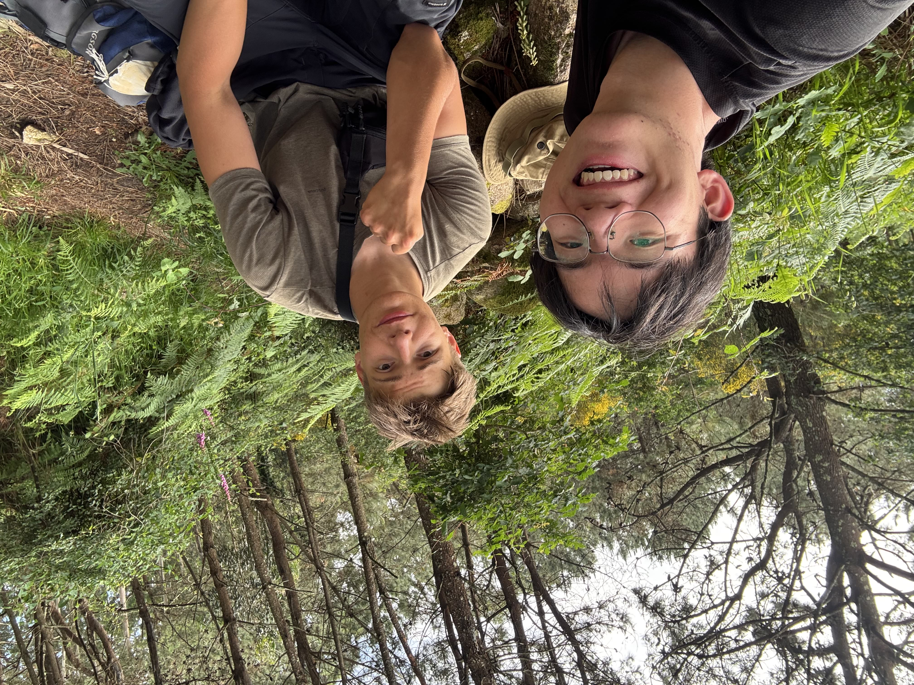
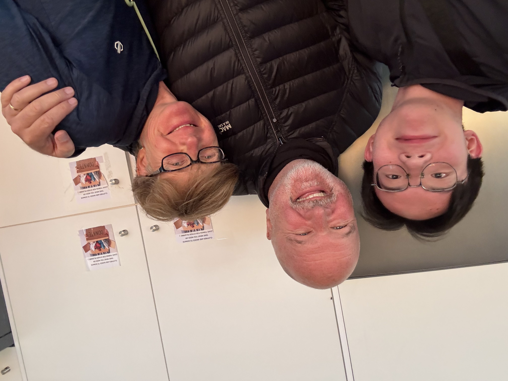
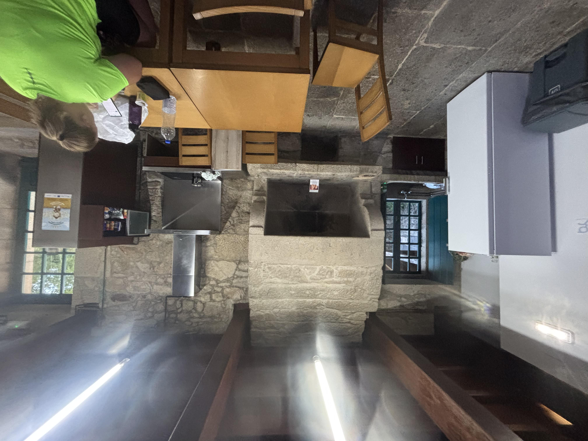

第一個黃箭頭
在路邊看到了第一個黃色箭頭——朝聖之路的標誌。這不是一個普通的箭頭，它是我每天都在尋找的答案。它告訴我：你正在正確的路上。當你懷疑的時候，抬頭看看，總有一個箭頭在等你。人生也需要這樣的箭頭——不是告訴我們終點在哪裡，而是告訴我們：繼續走，你沒有迷路。
繼續走，你沒有迷路。
Camino de Santiago · 葡萄牙之路
Porto → Santiago → Fisterra ← 返回個人主頁
在路邊看到了第一個黃色箭頭——朝聖之路的標誌。這不是一個普通的箭頭，它是我每天都在尋找的答案。它告訴我：你正在正確的路上。當你懷疑的時候，抬頭看看，總有一個箭頭在等你。人生也需要這樣的箭頭——不是告訴我們終點在哪裡，而是告訴我們：繼續走，你沒有迷路。

這是我在朝聖之路上遇到的新朋友。我們在一個小鎮的長椅上相遇，他說不同的語言，我用不同的節奏走路，但我們在同一條路上。原來，真正的友誼不需要共同的身份——只需要共同的方向。

一對來自英國的老夫婦邀請我進他們的家，和他們一起吃午餐。桌上擺著魚、麵包和紅酒。我們用英文聊天，但真正讓我們產生連結的，不是語言，而是他們打開家門的那個瞬間。在朝聖之路上，每一個人都是陌生人，但每一個人都願意成為你的家人。那一刻我突然明白——人類最古老的語言，不是文字，是善意。有些溝通，不需要翻譯。

站在大西洋岸邊，眼前是無盡的藍。海水拍打著懸崖，像是在說：你看，我從創世之初就在這裡了。你的一點煩惱，算什麼呢？面對海洋，我才真正意識到自己的煩惱有多渺小。自然是最好的心理治療師。

離開海岸，走進田野。金黃色的麥田在風中搖曳，像大地的呼吸。沒有海浪的聲音，只有風聲和鳥鳴。我開始習慣這種寧靜，也開始享受這種寧靜。城市讓我們習慣喧囂，而自然教我們聆聽靜默——靜默，是最深的對話。

走進了一片森林。樹木高聳，陽光從葉隙間篩落，像碎金灑在泥土上。空氣裡有松樹和潮濕泥土的氣味。在森林裡，你聽不見城市的喧囂，只能聽見自己的呼吸和心跳。那一刻我才明白：有時候，迷路不是迷路——是找到了自己。

一個簡單的木製長椅，一個生鏽的水龍頭，一塊樹蔭。這是我見過最豪華的休息站。我坐下來，脫掉鞋子，看著自己的腳——它走了這麼遠，還在堅持。我突然想：也許身體比我們想像的更強大。人生不是百米衝刺，是馬拉松。學會休息，也是一種力量。

下午三點，陽光穿過樹葉，灑在我的手上。那一刻沒有風，沒有聲音，只有光的溫度。我沒有拍風景——我拍的是那束光落在皮膚上的感覺。有些幸福不是巨大的成功，而是午後陽光落在手上的溫度。

每天晚上，我走進一個陌生的旅館。裡面有來自世界各地的朝聖者——德國人、韓國人、美國人、巴西人。我們睡在同一間房，分享同樣的疲憊和期待。早上醒來，各自出發，可能再也不會見面。但那一夜，我們是一家人。有些人只在你的人生裡停留一晚，卻留下了一輩子的回憶。

穿過一片桉樹林。光線從樹葉間篩落，腳下的泥土柔軟而安靜。耳邊只有腳步聲和呼吸聲。那一刻，走路不再是一種移動，而是一種冥想。你不去想過去，也不去想未來——你只存在於這一步，這一步，這一步。當你不再思考，你才真正開始活著。

在菲尼斯特雷——世界的盡頭。一個老人站在懸崖邊，看著大西洋。我不知道他是誰，但他站著的姿勢，像在跟大海對話。我在他旁邊坐下來，看了同樣的海。那一刻我理解了什麼是「到達」——到達不是終點，是學會與時間和平相處。老人的海是等待，而我的海，是出發。